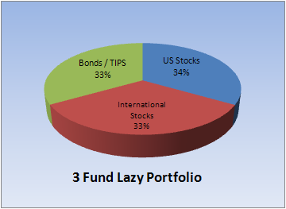

Investing for everyone
Lazy Investment portfolio explanation April 26, 2019
I am not qualified to give people investing advice. However, there are numerous sites you can read about investing on. Several of them are linked on my recommendations page
What I am going to do is discuss my personal strategy for savings. This strategy is frequently referred to as the lazy portfolio. It can take several forms.
Numerous academic studies have found that you can't beat the market. Individual stock picking is a risky strategy and unlikely to pay off for you. More than that, it's time consuming and we all have lives right? We don't have time to follow the stock market and figure out when to buy and sell stocks.
That means we want to put our money into mutual funds that have enough companies they follow market trends. I know this sounds complicated, but all that means is we pick something like the Vanguard Total Stock Market Fund, which is a mutual fund that buys shares from so many different companies that it's like you own the entire stock market. Then you don't worry about it any more. Don't try to time the market. Don't sell your fund shares because there's a little market depression. Just steadily keep buying and over time, the amount of money you have will increase because the market always goes back up.
I utilize the 3-fund version. This means that I buy not just the total market fund, but an international market fund and a bond fund. You don't need to do that. I just like to own a little bit of the world. And, as you get older, you'll eventually want to move your money into bonds because you won't have time to recover if there is a downswing in prices. Bonds are steady. They just won't earn you much money if you keep all your money there your entire life.
 Read more about Lazy Portfolios.